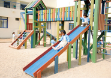
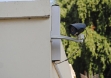

DAWOOD PUBLIC SCHOOL
Nursery- A Levels
"Enlighten my soul, Enlighten my being"
|
|
|
|
|
|
|
|
Infrastructure and Facilities
Four purpose-built school buildings meet the demands of each section; from the Play group to the A Level. Besides housing large, airy and spacious classrooms, open to the sky green atriums and wide corridors, the campus also accommodates and offers the following facilities.
DPS clinic provides basic medical aid to every student through a full time General Physician, who is responsible for regular health check-ups of all DPS students and maintenance of their computerized medical records. Consequently, she keeps a check on risk factors involved in the spread of any common infections, like Influenza, Mumps, Chicken Pox, etc. The DPS doctor also conducts and organizes awareness raising workshops, on maintaining a healthy life style, for students, faculty, staff and parents. Thus educating them on personal hygiene and common infection preventive and proactive measures, etc.
Professional psychologists present at the campus provide ongoing and consistent counseling and support to the entire student body at DPS. Students are encouraged to face and deal with any emotional or learning complexities throughout their academic journey at DPS.
Students, teachers and other staff members enjoy and spend valuable time in two DPS libraries, which host a treasure of reading materials ranging from; encyclopedias, reference books, fiction, biographies and novels, books on technical information, leading journals, magazines and newsletters in both print and softcopy. Students and teachers both avail and enjoy internet facilities during school hours. Computer systems with internet facilities are also open to all its visitors.
Professionally updated computerized laboratories expose students to hands-on experience, hence developing high order cognitive skills in them. Students and faculty also enjoy unlimited Wi-Fi facilities within the A-Level building.
Well equipped science laboratories meeting the Cambridge International Examination (CIE) standards promote experiential learning through application of concepts taught in class and are centers for Advance Subsidiary (AS) Level Cambridge International Practical Examination year after year.
Food and Nutrition classes raise students’ awareness on the importance of healthy food and eating habits and also instill functional culinary skills in students. Students not only learn about the nutritive value of the ingredients used in recipes but actually plan and prepare delicious meals in a safe and well equipped Food and Nutrition school laboratory.
Gardening emerged on the School’s curriculum in 2008 and has become very popular among students. Using the enquiry approach and promoting organic gardening, students grow vegetables and flowers in their allotted gardening patches under the guidance of trained gardening teachers. Creative gardening activities, competitions and flower shows are organized by the Dawoodian Inspirational Gardener’s Society (DIGS) throughout the academic year. DPS has consistently been taking part in the Horticultural Society of Pakistan Flower Show and has always emerged as an award winner in the competitions held.
Wide play areas, lush green gardens, sports grounds and a badminton courtyard provide ample space and opportunity for students from Pre-Primary to A Level to play, practice and maintain a healthy life style. Major intra/inter school sports activities, competitions and events are also organized throughout the year to promote team spirit and drive for healthy competition.
Indoor sports also play an important role in the development and grooming of one’s personality. The indoor play area, in the A-Level building, provides students with opportunities that challenge the young minds and bodies through facilities for sports like; skating, table tennis, carom board, chess, foos ball, dart boards etc.
The DPS Campus offers spacious and relaxing dine-in cafeteria in the A-Level building, a fully hygienically maintained canteen in the Secondary
Section and the “DPS Mini Dhaba” in front of the Primary building, all serving a variety of food items for the students and staff of DPS.
Purpose built Art rooms in all the sections within the DPS campus are hubs for students to explore and heighten their aesthetic as well as creative skills
through various forms of painting, drawing, sculpture making and other forms of art.
Three purpose built air-conditioned and spacious seminar rooms equipped with Audio/Visual ultimedia facilities are always in extensive use for various workshops, seminars and meetings for students, faculty and parents.
Activity/Common Rooms are students haven, where they relax and socialize informally with their peers and teachers. Each of the four buildings has common-rooms, which are also used for preparations and practice of co-curricular activities.
 A unique and well maintained Audio Visual room enables the students to explore horizons beyond and express their understanding
through the latest multimedia facilities. The AV room is equipped with an LCD projector which helps our students to present and conduct presentations
and projects. Students also watch documentaries and movies as part of the school curriculum.
A unique and well maintained Audio Visual room enables the students to explore horizons beyond and express their understanding
through the latest multimedia facilities. The AV room is equipped with an LCD projector which helps our students to present and conduct presentations
and projects. Students also watch documentaries and movies as part of the school curriculum.
 The campus has two main play areas, one exclusively for the young Pre-Primary students and the other for the student body. The play grounds are equipped with slides, swings, jungle gyms, big playsets, seesaws etc.
 In these times of insecurity and social turbulence, DPS has taken extensive measures to make provisions for the safety of the children. Emergency staircases, detectors along with smoke alarm systems have been installed in the various buildings. Furthermore, additional fire extinguishers have been placed on each floor of the school buildings.
A fully functional Solar Panel system has been installed at the A-Level Building by Dawood Lawrencepur Ltd. The aim of this initiative is to raise awareness amongst students about alternative energy resources and its benefits to the environment. The system provides 2.1 KW of electricity in two A-Level classrooms, to run twelve ceiling fans and twelve tube lights.
Three efficient stand by generators provide service round the clock, to all the four buildings, ensuring smooth functioning at all academic and administrative levels.
DPS is committed to providing a healthy and safe environment to its students, faculty and staff. We are proud to announce the installation of the Auto Chlorination Plant which will consistently gauge and ensure safe levels of chlorine in the water to ensure bacteria free and safe water for all our children.
Copyright ® 2022 DPS